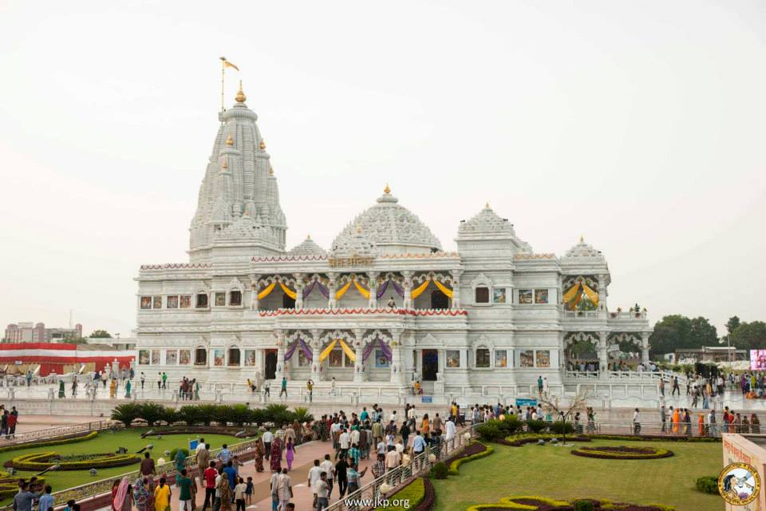

Prem Mandir is a Hindu temple in Vrindavan, Mathura, India. It is maintained by Jagadguru Kripalu Parishat, an international non-profit, educational, spiritual, charitable trust. The complex is on a 54-acre site on the outskirts of Vrindavan, and is dedicated to Radha Krishna and Sita Ram. The temple structure was established by the fifth Jagadguru, Kripalu Maharaj. Figures of Shri Krishna and his followers depicting important events surrounding the Lord's existence cover the main temple.
The foundation stone was laid by Kripalu Maharaj in the presence of thousand devotees on 14 January 2001. It took 1000 artists about 12 years to build the complex. The Vrindavan site was developed by Kripalu Maharaj, whose main ashram was at Vrindavan.[7] He dedicated the gift of love to Shri Vrindavan Dham. Prem Mandir is constructed entirely of Italian marble. The total dimensions of the temple including its flag is 125 ft. high, 190 ft. long and the 128 ft. wide raised platform serves as the seat of the two-storeyed white monument. A circumambulation route has been constructed on the mandir prangan, the platform of the temple, enabling visitors to view the 48 panels depicting the pastimes of Shri Radha Krishna which are carved on the outer walls of the temple. The walls are made of solid Italian marble, 3.25 ft. thick. The thickness of the walls of the garbha-griha is 8 ft to bear the weight of huge shikhar, swarna Kalash and the Flag. 84 panels set up on the temple's exterior display the pastimes of Shri Krishna depicted on Shrimad Bhagvatam.